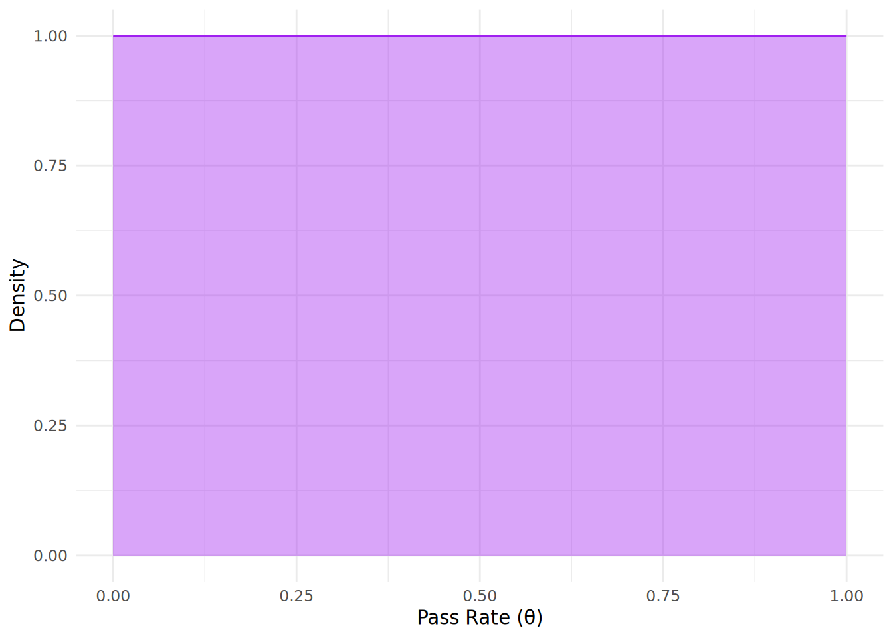
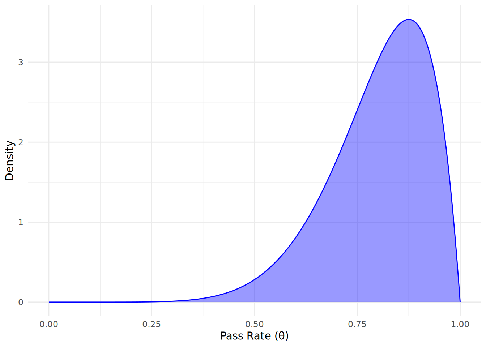
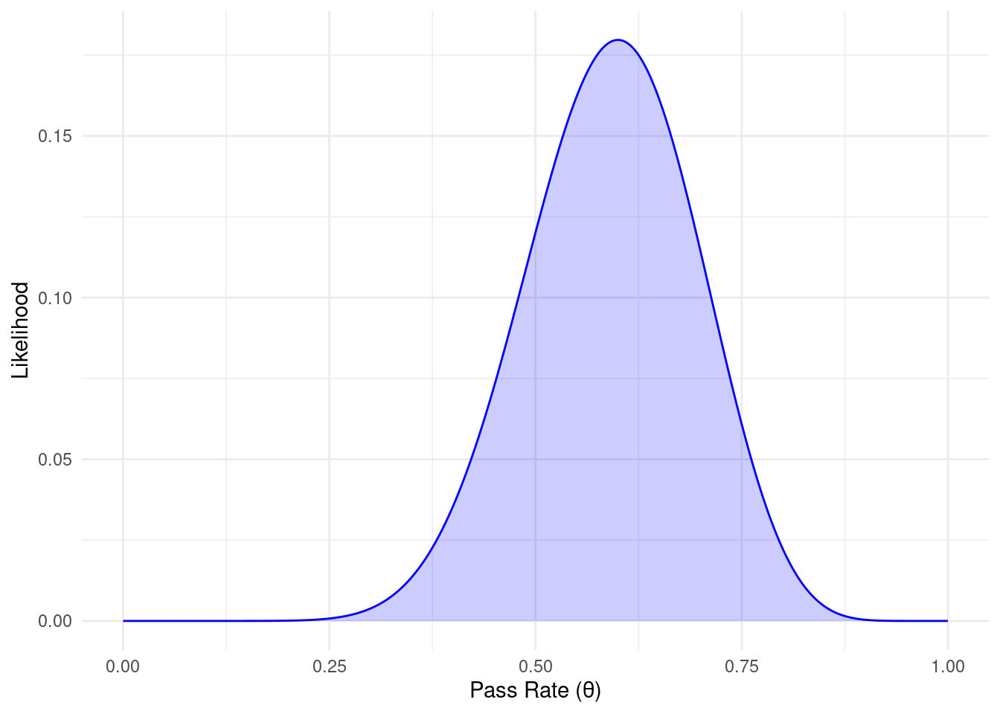
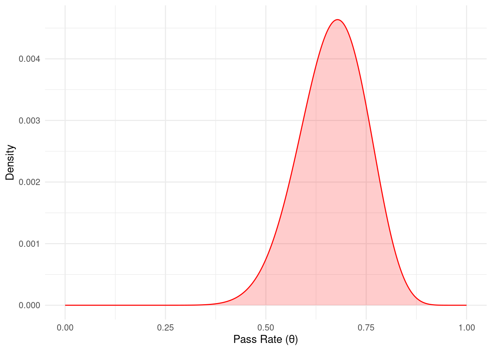
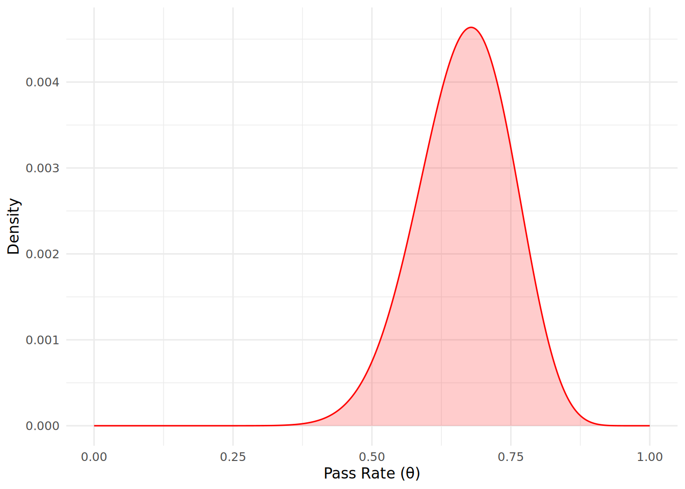
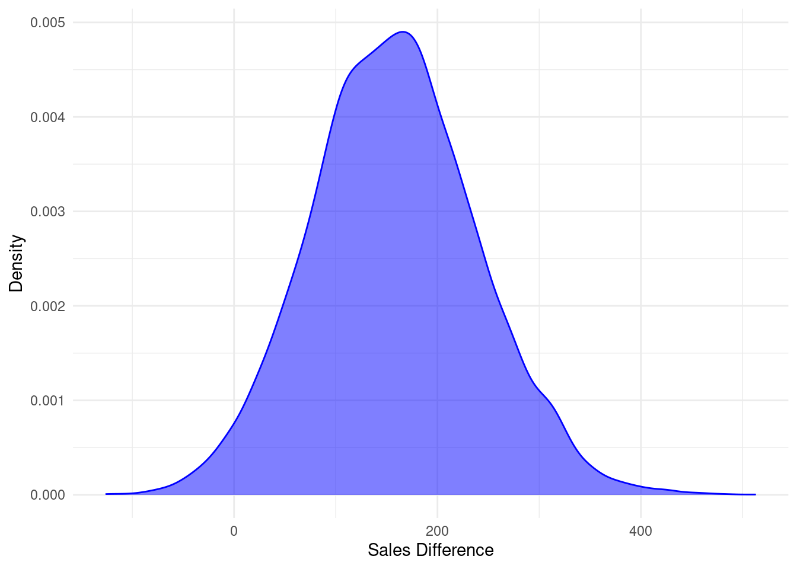
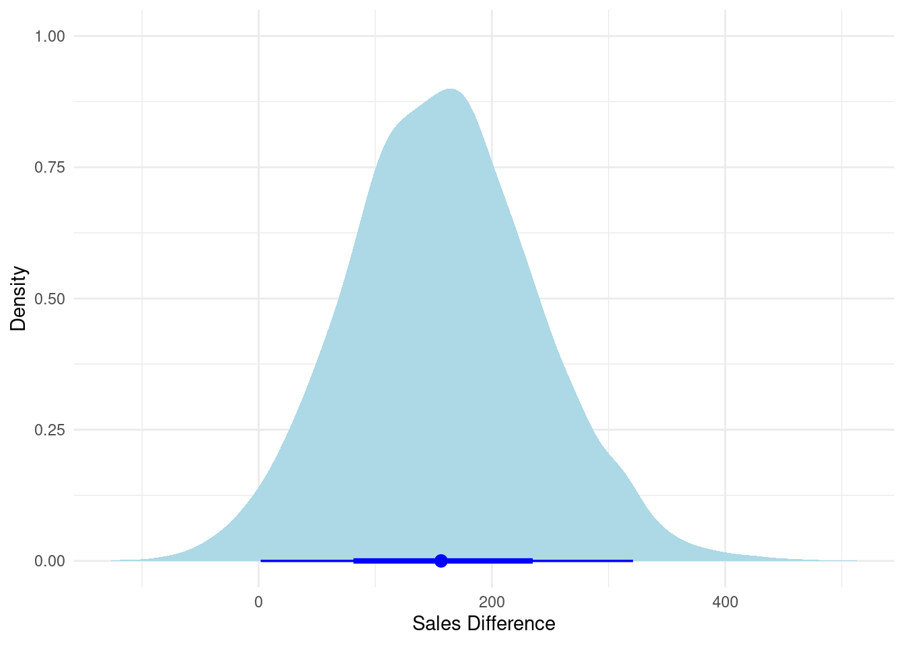
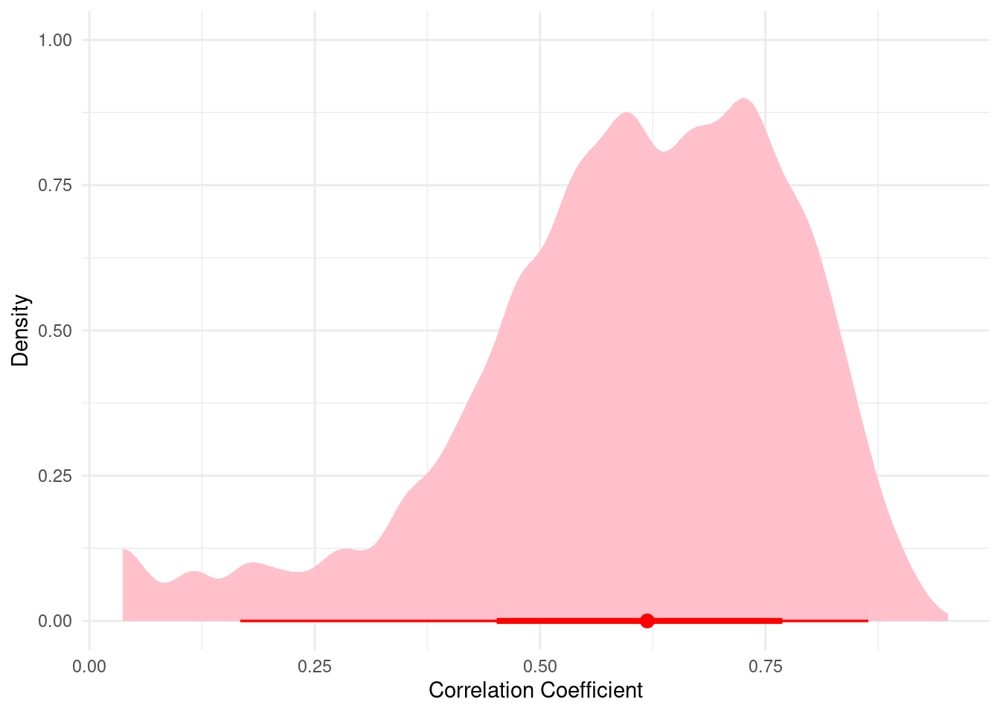

12 Bayesian Inference - A Modern Alternative to Classical Statistical Methods
All of the methods and approaches we have seen in this book so far are based on a philosophy that repeated sampling from a population will yield information about that population. For example, in Chapter 3, we discussed how to use sample data to estimate population parameters such as means and correlation coefficients, how to construct confidence intervals around those parameter estimates and how to test hypotheses about our population parameters. In later chapters we learned how to do the same with model coefficients, allowing us to extract meaningful information from our models to help us with real-life problems.
The philosophy underlying this approach is that the population parameter that we seek is a single true unknown value, and that by taking repeated samples from the population and determining the frequency of occurrence of specific values for our parameter of interest, we can learn more and more about the true value of the parameter for our population. This is the basis of classical or frequentist statistics.
In this chapter we are going to ‘flip the script’ on this philosophy. Instead of our population parameter being a fixed unknown value which we estimate through many repeated samples of data, we are going to treat our population parameter as a random variable that can take on a range of possible values, each with some probability, and we will treat our data as fixed. This leads us to a different way of thinking about statistical inference, and provides us with a toolkit that has more flexibility than classical statistics. In particular, we can incorporate prior knowledge or beliefs about our parameters into our analyses, we can make direct probability statements about our parameters given the data we have availalable, and we can continuously update our beliefs about parameters as new data becomes available.
The critical theorem from probability theory that underpins this approach is Bayes’ Theorem, named after the Reverend Thomas Bayes, an 18th century statistician and theologian. As we will see, Bayes’ Theorem provides us with a mathematical way to combine our prior beliefs about a parameter with the evidence provided by our data to arrive at an updated posterior belief about the parameter. This mechanism is the essence of Bayesian inference.
Bayesian inference has become increasingly popular in recent years. This was not always so, because the techniques used in Bayesian inference require simulation of data, which can require substantially more computational resources compared to classical approaches. Only in the past two decades has widespread computational power become available that has made it more feasible to apply Bayesian methods to large datasets. As a result, Bayesian approaches are now widely used in fields such as machine learning, epidemiology, ecology and social sciences, to name but a small few. All of the methods that we have learned so far using classical statistics have Bayesian counterparts.
In People Analytics, Bayesian methods can be particularly useful when dealing with small sample sizes, when incorporating prior knowledge about employee behavior or organizational context, or when making probabilistic predictions about future outcomes. It is fair to say that not all individuals working in this field will need to have a knowledge of Bayesian inference, as classical approaches will often yield similar conclusions especially when sample sizes are larger and prior beliefs are limited. However, having a basic grasp of Bayesian methods can provide an analyst with a greater depth of understanding on how the processes they are trying to model play out statistically. For this reason, readers should regard this and subsequent chapters as optional, advanced material.
In this chapter we will explore the fundamental mechanics of how Bayesian inference works via Bayes’ Theorem, we will introduce how hypothesis testing can be done within the Bayesian framework, and we will outline some important concepts that we can take forward into subsequent chapters. For a more in depth treatment of Bayesian inference, Gelman et al. (2013) is highly recommended for theory and examples while McElreath (2020) is an excellent practical resource which includes R code.
12.1 Bayes’ Theorem and the mechanics of Bayesian Inference
Recall that in earlier chapters we adopted a frequentist approach to statistical inference, where we treated our data as random and our parameters as fixed but unknown. In effect, this approach asks the question: Given a fixed but unknown parameter (such as a population mean), what is the probability of observing the sample data that we have collected?. Using probability notation, if we call our parameter \(\theta\) and our observed data \(D\), we can express this question as \(P(D \mid \theta)\), which is known as the likelihood of the data given the parameter.
In Bayesian inference, we reverse this question to ask: Given the fixed data that we have observed, what are the possible values of the parameter we are interested in? That is, we are interested in \(P(\theta \mid D)\), which we call the posterior probability of the parameter given the data. Bayes’ Theorem provides us with a way to calculate this posterior probability by combining our prior beliefs about the parameter with the likelihood of the observed data. Bayes’ Theorem is expressed mathematically as follows:
\[P(\theta \mid D) = \frac{P(D \mid \theta) P(\theta)}{P(D)}\]
Where:
- \(P(\theta \mid D)\) is the posterior probability of the parameter \(\theta\) given the data \(D\).
- \(P(D \mid \theta)\) is the likelihood of the data \(D\) given the parameter \(\theta\).
- \(P(\theta)\) is the prior probability of the parameter \(\theta\) before observing the data.
- \(P(D)\) is the marginal likelihood or evidence, which is the total probability of observing the data \(D\) under all possible values of \(\theta\). Using \(P(D)\) as a denominator in the formula for the posterior ensures that the posterior probabilities sum to 1 across all possible values of \(\theta\).
In practice, when performing Bayesian inference, we often focus on the numerator of Bayes’ Theorem, \(P(D \mid \theta) P(\theta)\), since the denominator \(P(D)\) is a normalizing constant that does not depend on \(\theta\). Therefore, we can also express the posterior probability as being proportional to the product of the likelihood and the prior. That is:
\[P(\theta \mid D) \propto P(D \mid \theta) P(\theta)\]
Let’s consider a concrete walkthrough example to illustrate what each of these components of Bayes’ Theorem represent and to understand how Bayesian inference works. For this walkthrough, we will use basic R functions to perform the calculations and simulations, rather than relying on specialized Bayesian software packages, so that we can directly observe the mechanics of how Bayesian inference works under the hood. Once we have grasped a basic understanding of Bayesian inference, we will start to explore how we run Bayesian models with specialized software packages.
12.2 Walkthrough Example
You have been asked to help a group of learning experts at a technology company understand the effectiveness of a new training program that they have implemented for their engineers. The training program helps the engineers prepare for a certification exam that is important for their career development. The company wants to know what proportion of engineers who complete the training program will go on to pass the certification exam. So far, only 20 engineers have completed the training program, and of those, 12 have passed the certification exam, with 8 failing the exam. However, the learning experts at the company have done market research on similar programs and their expectation is that they will see a pass rate of around 80-90% over time, though they admit that there is some uncertainty regarding this estimate.
12.2.1 Defining the prior belief \(P(\theta)\)
In Bayesian inference, we start by defining our prior belief about the parameter of interest before observing any data. In this case, our parameter of interest is the pass rate for the certification exam among engineers who complete the training program. Since our parameter involves a specified proportion of passes and fails in the certification exam, we can use a Beta distribution to represent our prior belief. A Beta distribution is a continuous probability distribution defined on the interval [0, 1], which makes it suitable for modeling proportions and probabilities.
If we call our pass rate parameter \(\theta\), where \(0 \leq \theta \leq 1\), we can define our prior belief about \(\theta\) using a Beta distribution with shape parameters \(\alpha\) and \(\beta\), where \(\alpha\) and \(\beta\) represent the number of passes and fails respectively. Therefore our prior belief can be expressed as the following distribution:
\[ \theta \sim \text{Beta}(\alpha, \beta) \]
Now we need to decide on the shape parameters \(\alpha\) and \(\beta\) for our prior distribution. If we have absolutely no information on the pass rate, we might choose a uniform prior with \(\alpha = 1\) and \(\beta = 1\), which reflects complete uncertainty about the pass rate. This kind of prior belief is called a non-informative prior. You can see the shape of this prior distribution in Figure 12.1, where it assumes that all values of \(\theta\) are equally likely.
However, we do have some information from market research that suggests a high pass rate is likely, so we could choose an informative prior that reflects this belief. Based on the market research, we might choose \(\alpha = 8\) and \(\beta = 2\), which reflects our belief that the pass rate is likely to be high (around 80-90%), but with some uncertainty. Our informative prior distribution can therefore be expressed as:
\[ \theta \sim \text{Beta}(8, 2) \]
Let’s simulate and plot this prior distribution to visualize our initial beliefs about the pass rate before observing any data. First, we will take 1000 possible values of \(\theta\) between 0 and 1 and simulate a Beta distribution. We can use the dbeta() function to calculate the density of the Beta distribution for different values of \(\theta\).
# set a seed to ensure this process can be reproduced exactly
set.seed(42)
# create a vector with 1000 possible values for theta between 0 and 1
theta_values <- seq(0, 1, length.out = 1000)
# simulate the prior distribution using a Beta distribution with alpha = 8 and beta = 2
prior_distribution <- dbeta(theta_values, shape1 = 8, shape2 = 2)This has provided us with the probability density function (PDF) across our 1000 values of \(\theta\)1. Let’s now plot our simulated prior distribution to visualize our initial beliefs about the pass rate before observing any data, as in Figure 12.2.
# load ggplot2 for plotting
library(ggplot2)
# create a data frame for plotting
prior_df <- data.frame(theta = theta_values, density = prior_distribution)
# plot the prior distribution
ggplot(prior_df, aes(x = theta, y = density)) +
geom_line(color = "darkgreen") +
geom_area(fill = "darkgreen", alpha = 0.2) +
labs(x = "Pass Rate (θ)",
y = "Density") +
theme_minimal()
Comparing to the non-informative prior in Figure 12.1, we can see that the area has shifted significantly to the right, indicating our prior belief that pass rates are likely to be high.
12.2.2 Defining the likelihood \(P(D \mid \theta)\)
Next, we need to define the likelihood of the observed data given our parameter of interest. Our observed data from the first learning program consists of 12 passes and 8 fails among the 20 engineers who completed the training program. Since our data involves counts of passes and fails, recall from Chapter 5 that we can use a Binomial distribution to model the likelihood of observing this data given different values of the pass rate \(\theta\). In this case, the likelihood function can be expressed as:
\[ P(D \mid \theta) = \binom{20}{12} \theta^{12}(1 - \theta)^{8} \]
Let’s simulate and plot this likelihood function to visualize how likely our observed data is for the 1000 different values of the pass rate \(\theta\). We can use the dbinom() function in R to calculate the likelihood of observing 12 passes out of 20 engineers for the different values of \(\theta\).
# simulate the likelihood function using a Binomial distribution
likelihood_function <- dbinom(12, size = 20, prob = theta_values)Let’s now plot our simulated likelihood function in Figure 12.3. Note, importantly, that the likelihood function is not a probability distribution and does not need to sum to 1 across all our values of \(\theta\).
# create a data frame for plotting
likelihood_df <- data.frame(theta = theta_values, likelihood = likelihood_function)
# plot the likelihood function
ggplot(likelihood_df, aes(x = theta, y = likelihood)) +
geom_line(color = "blue") +
geom_area(fill = "blue", alpha = 0.2) +
labs(x = "Pass Rate (θ)",
y = "Likelihood") +
theme_minimal()
12.2.3 Calculating the posterior \(P(\theta \mid D)\)
Now that we have defined our prior belief and the likelihood of the observed data, we can use Bayes’ Theorem to calculate the posterior distribution of the pass rate \(\theta\) given the observed data. Here we will take all 1000 simulated values of \(\theta\) and apply Bayes’ theorem across each of them to calculate the posterior probability that \(\theta\) is our population pass rate given the data we have observed. We multiply the prior distribution and the likelihood function for each value of \(\theta\), and then normalize the result to ensure that the posterior distribution sums to 1:
# calculate the unnormalized posterior distribution (numerator of Bayes' Theorem)
unnormalized_posterior <- prior_distribution * likelihood_function
# normalize the posterior distribution (divide by total area to ensure it integates to 1)
posterior_distribution <- unnormalized_posterior / sum(unnormalized_posterior)Let’s now plot our calculated posterior distribution \(P(\theta \mid D)\) to visualize our updated beliefs about the pass rate \(\theta\) after observing the data, as in Figure 12.4.
# create a data frame for plotting
posterior_df <- data.frame(theta = theta_values, density = posterior_distribution)
# plot the posterior distribution
ggplot(posterior_df, aes(x = theta, y = density)) +
geom_line(color = "red") +
geom_area(fill = "red", alpha = 0.2) +
labs(x = "Pass Rate (θ)",
y = "Density") +
theme_minimal()
From the posterior distribution plot, we can see how our beliefs about the pass rate \(\theta\) have been updated after observing the data, and we now expect our pass rate to most likely be lower than the prior distribution might suggest. The posterior distribution reflects both our prior beliefs and the evidence provided by the observed data. We can use this posterior distribution to make direct probabilistic statements about the pass rate. If we plot our prior, likelihood and posterior together on a scaled plot so that probabilities are standardized and comparable, we can see that the most likely (modal) posterior outcome (the peak of the distribution) is a pass rate of 0.68, which is a compromise between our prior belief (0.87) and what the data tells us (0.6), as seen in Figure 12.52.

12.2.4 Bayesian Updating
One of the powerful features of Bayesian inference is the ability to continuously update our beliefs about a parameter as new data becomes available. In our example, suppose that after some time, an additional 30 engineers complete the training program, and of those, 25 pass the certification exam while 5 fail. We can use our current posterior distribution as the new prior distribution and incorporate this new data to update our beliefs about the pass rate \(\theta\). A common saying in Bayesian statistics is that today’s posterior is tomorrow’s prior (Lindley (1972)).
To perform this Bayesian updating, we can follow the same steps as before. First, we will define our new prior distribution using the current posterior distribution. Then, we will define the likelihood of the new observed data using a Binomial distribution. Finally, we will calculate the new posterior distribution by combining the new prior and the new likelihood using Bayes’ Theorem, as in Figure 12.6.
# new observed data
new_passes <- 25
new_fails <- 5
# define new prior distribution using current posterior distribution
new_prior_distribution <- posterior_distribution
# simulate the likelihood function for the new observed data
new_likelihood_function <- dbinom(new_passes, size = new_passes + new_fails, prob = theta_values)
# calculate the unnormalized new posterior distribution
unnormalized_new_posterior <- new_prior_distribution * new_likelihood_function
# normalize the new posterior distribution
new_posterior_distribution <- unnormalized_new_posterior / sum(unnormalized_new_posterior)
# plot the new posterior distribution
new_posterior_df <- data.frame(theta = theta_values, density = new_posterior_distribution)
ggplot(new_posterior_df, aes(x = theta, y = density)) +
geom_line(color = "purple") +
geom_area(fill = "purple", alpha = 0.2) +
labs(x = "Pass Rate (θ)",
y = "Density") +
theme_minimal()
We see that the most likely (modal) pass rate has now increased to 0.76, reflecting the additional evidence provided by the new data. This demonstrates how Bayesian inference allows us to continuously update our beliefs about a parameter as new data becomes available.
12.2.5 Summary statistics and credible intervals of the posterior distribution
We can calculate summary statistics of our posterior distribution to better state our updated beliefs about the pass rate \(\theta\). For example, we can calculate the mean and median of the posterior distribution to get a sense of the central tendency of our updated beliefs. We can also calculate the mode of the posterior distribution, which represents the most likely value of \(\theta\) given the observed data.
# calculate the mean (expected value) of the new posterior distribution
(mean_posterior <- sum(theta_values * new_posterior_distribution))[1] 0.75# calculate the median of the new posterior distribution
(median_posterior <- theta_values[which(cumsum(new_posterior_distribution) >= 0.5)[1]])[1] 0.7527528# calculate the mode of the posterior distribution
(mode_posterior <- theta_values[which.max(new_posterior_distribution)])[1] 0.7587588Aditionally, given that we have determined a specific distribution for our parameter of interest (the pass rate \(\theta\)), we can also calculate credible intervals to express the uncertainty around our estimate. A credible interval is an interval within which the parameter is believed to lie with a certain probability, based on the posterior distribution. For example, a 95% credible interval for the pass rate \(\theta\) would indicate that there is a 95% probability that the true pass rate lies within this interval, given the observed data. We can calculate the 95% credible interval for our updated posterior distribution using the quantile() function in R:
# calculate the 95% credible interval for the updated posterior distribution
interval_boundaries <- quantile(new_posterior_distribution, probs = c(0.025, 0.975))
# Cumulative sum of probability
cumsum_posterior <- cumsum(new_posterior_distribution)
# Find lower and upper bounds (approximate)
lower_bound <- theta_values[which(cumsum_posterior >= 0.025)[1]]
upper_bound <- theta_values[which(cumsum_posterior >= 0.975)[1]]
paste0("95% Credible Interval: [", round(lower_bound, 2), ", ", round(upper_bound, 2), "]")[1] "95% Credible Interval: [0.63, 0.85]"Note that credible intervals are quite different from the confidence intervals we have seen in previous chapters using classical statistics. A 95% confidence interval indicates that if we were to repeat our sampling process many times, 95% of the calculated confidence intervals would contain the true parameter value. In contrast, a 95% credible interval indicates that there is a 95% probability that the true parameter value lies within the interval, given the observed data and our prior beliefs. This distinction highlights one of the key differences between Bayesian and frequentist approaches to statistical inference.
12.2.6 Computational Methods for Bayesian Inference
It is clear from our example above that, different from classical statistics, Bayesian inference focuses on deriving the entire posterior distribution of a parameter rather than just point estimates and confidence intervals. This requires that simulations are used to approximate the posterior distribution, and this explains why Bayesian inference is significantly more computationally demanding. In our walkthrough example, we have used one of the simpler methods of simulation known as grid approximation, where we evaluated the prior, likelihood and posterior based a grid of possible values for the parameter \(\theta\). This method works well for simple models with a single parameter, but it can become computationally infeasible for more complex models with multiple parameters.
In practice, calculating posterior distributions analytically can be challenging, especially for complex models or large datasets. As a result, Bayesian inference often relies on computational methods such as Markov Chain Monte Carlo (MCMC) to approximate posterior distributions. MCMC methods generate samples from the posterior distribution by constructing a Markov chain that converges to the target distribution over time. These samples can then be used to estimate summary statistics and credible intervals for the parameters of interest. There are several software packages available for performing Bayesian inference using MCMC methods. These packages provide user-friendly interfaces for specifying Bayesian models and running MCMC simulations, making it easier for practitioners to apply Bayesian methods to real-world problems. We will use the stan software package3 to perform Bayesian inference in this and subsequent chapters, often via the rstanarm package and other common R packages.
12.3 Bayesian hypothesis testing
In classical statistics, we rely heavily on the \(p\)-value to test hypotheses. We set up a null hypothesis (usually that there is no effect or no difference) and an alternative hypothesis. If the \(p\)-value falls below a defined \(\alpha\) (usually 0.05), we reject the null hypothesis. However, as we discussed in previous chapters, the \(p\)-value is often misunderstood. It tells us the probability of observing data at least as extreme as ours, assuming the null hypothesis is true, that is \(P(D \mid H_0)\). It does not tell us the probability that the hypothesis itself is true.
Using a Bayesian approach, we can calculate the probability of our hypotheses being true given the data we observe, that is \(P(H \mid D)\). This allows us to test any defined hypothesis \(H\) against our data \(D\) and make direct statements about the probability that \(H\) is true.
Using Bayes’ theorem again, we can express this as:
\[ P(H \mid D) = \frac{P(D \mid H) P(H)}{P(D)} \]
Where: - \(P(H \mid D)\) is the posterior probability of the hypothesis \(H\) given the data \(D\). - \(P(D \mid H)\) is the likelihood of the data \(D\) given the hypothesis \(H\). - \(P(H)\) is the prior probability of the hypothesis \(H\) before observing the data. - \(P(D)\) is the marginal likelihood or evidence, which is the total probability of observing the data \(D\) under all possible hypotheses—a normalizing denominator as before.
Now let’s assume we have two competing hypotheses: the Null Hypothesis (\(H_0\)) and the Alternative Hypothesis (\(H_1\)). We want to compare these two hypotheses given our observed data \(D\). If we apply Bayes’ Theorem to both and find their quotient, we arrive at the following:
\[ \frac{P(H_1 \mid D)}{P(H_0 \mid D)} = \frac{P(D \mid H_1)}{P(D \mid H_0)} \times \frac{P(H_1)}{P(H_0)} \]
The left side of this equation is known as the posterior odds of the two hypotheses, while the right side consists of two components: the Bayes Factor (the first term) and the prior odds (the second term). The Bayes Factor is a multiple which quantifies how much more likely the data is under one hypothesis compared to the other, while the prior odds represent our initial beliefs about the relative plausibility of the two hypotheses before observing the data. For example, if we have no prior preference for either hypothesis, the prior odds would be 1. Then if the Bayes Factor is 5, the posterior odds would also be 5, meaning that after observing the data, the Alternative Hypothesis is 5 times more likely than the Null Hypothesis.
If we are comparing an Alternative Hypothesis (\(H_1\)) against a Null Hypothesis (\(H_0\)), the Bayes Factor is usually denoted as \(BF_{10}\):
\[ BF_{10} = \frac{P(D \mid H_1)}{P(D \mid H_0)} \]
Using the Bayes Factor, we can interpret the strength of evidence provided by the data in favor of one hypothesis over the other, as follows:
- If \(BF_{10} = 1\), the data provides equal evidence for both hypotheses.
- If \(BF_{10} > 1\), the data favors the Alternative Hypothesis (\(H_1\)).
- If \(BF_{10} < 1\), the data favors the Null Hypothesis (\(H_0\)).
A common rule of thumb (see Jeffreys (1961)) for interpreting Bayes Factors which favor the Alternative Hypothesis is:
- 1-3: Anecdotal evidence
- 3-10: Moderate evidence
- 10-30: Strong evidence
- >30: Very strong evidence
To implement Bayesian hypothesis tests in R, we will utilize the BayesFactor package. This package allows us to perform statistical hypothesis tests within a Bayesian framework without needing to write complex custom simulations from scratch. To illustrate these tests, we will use the same examples of hypothesis tests on our salespeople data set as we used in Chapter 3 for classical statistics, but now using smaller subsets of this data and a Bayesian approach. Let’s download that set first.
# if needed, use online url to download salespeople data
url <- "http://peopleanalytics-regression-book.org/data/salespeople.csv"
salespeople <- read.csv(url)
# remove NAs
salespeople <- salespeople[complete.cases(salespeople), ]12.3.1 Bayesian t-test for difference in means between two independent groups
As in Chapter 3, we want to test if there is a difference in sales between high performing and low performing salespeople.
We will take random samples of 10 salespeople in the lowest performing group and 10 salespeople in the highest performing group. We will assume for our purposes in this chapter that we only have data for these 20 salespeople.
# take samples of 10 people with performance ratings 1 and 4
set.seed(42)
low_perf <- salespeople[salespeople$performance == 1, ]
sample_low <- low_perf[sample(nrow(low_perf), 10), ]
high_perf <- salespeople[salespeople$performance == 4, ]
sample_high <- high_perf[sample(nrow(high_perf), 10), ]
# combine into a single data frame
df_sales <- rbind(sample_low, sample_high)Next we will run a Bayesian t-test to compare the mean sales between the two performance groups. Our Null Hypothesis (\(H_0\)) is that there is no difference in mean sales between high and low performing salespeople, while our Alternative Hypothesis (\(H_1\)) is that there is a difference in mean sales between the two groups.
# load BayesFactor package
library(BayesFactor)
# run a Bayesian t-test
ttestBF(formula = sales ~ performance, data = df_sales)Bayes factor analysis
--------------
[1] Alt., r=0.707 : 3.244716 ±0.01%
Against denominator:
Null, mu1-mu2 = 0
---
Bayes factor type: BFindepSample, JZSWe see that the Bayes Factor \(BF_{10}\) is over just over 3, indicating that the data would approximately triple any prior belief we have about the likelihood of the alternative hypothesis. This is moderate evidence in favor of the data supporting the Alternative Hypothesis (\(H_1\)) that there is a difference in mean sales between high and low performing salespeople.
Note that because of the Bayes Factor, we did not even have to look at the posterior distributions of the difference in means to make this conclusion. However, we can still plot these posterior distributions to visualize the difference in means between the two groups, as in Figure 12.7.
# run Bayesian t-test and extract posterior samples over 10000 simulations
bf_result <- ttestBF(formula = sales ~ performance, data = df_sales)
posterior_samples <- posterior(bf_result, iterations = 10000)We can view the first few rows of the posterior samples to see the estimated difference in sales between low and high performing salespeople.
head(posterior_samples)Markov Chain Monte Carlo (MCMC) output:
Start = 1
End = 7
Thinning interval = 1
mu beta (1 - 4) sig2 delta g
[1,] 589.0649 -183.5547 22442.51 -1.2252640 0.6993191
[2,] 555.0884 -128.8223 23560.82 -0.8392590 6.6988426
[3,] 515.0254 -316.9280 33857.86 -1.7223876 2.2065154
[4,] 537.9935 -216.5419 23059.63 -1.4259881 1.1656368
[5,] 493.3200 -170.4056 17089.27 -1.3035331 1.7582119
[6,] 499.8313 -129.1826 38461.20 -0.6587075 4.7096177
[7,] 551.0253 -221.3193 14510.69 -1.8372801 1.6424736The key column we are interested in is the beta (1 - 4) column, which represents the difference in sales between low performing (performance = 1) and high performing (performance = 4) salespeople for each sample iteration. A negative value indicates that high performing salespeople have higher sales than low performing salespeople. We can use this data to plot our posterior as in Figure 12.7, negating our data to show a more intuitive difference between high performing and low performing salespeople.
# create a data frame for plotting
posterior_df <- data.frame(
sales_diff = as.vector(-posterior_samples[ ,"beta (1 - 4)"])
)
# plot posterior distributions of sales for low and high performing salespeople
ggplot(posterior_df, aes(x = sales_diff)) +
geom_density(alpha = 0.5, color = "blue", fill = "blue") +
labs(x = "Sales Difference",
y = "Density") +
theme_minimal()
We can also calculate summary statistics and credible intervals for the posterior distribution of the sales difference between high and low performing salespeople, using the convenient describe_posterior() function§ from the bayestestR package.
library(bayestestR)
(posterior_summary <- describe_posterior(-posterior_samples))Summary of Posterior Distribution
Parameter | Median | 95% CI | pd | ROPE | % in ROPE
--------------------------------------------------------------------------------------
mu | -525.86 | [ -608.67, -445.46] | 100% | [-0.10, 0.10] | 0%
beta (1 - 4) | 156.42 | [ 1.69, 321.02] | 97.63% | [-0.10, 0.10] | 0%
sig2 | -32612.55 | [-68006.46, -17957.97] | 100% | [-0.10, 0.10] | 0%
delta | 0.86 | [ 0.01, 1.86] | 97.63% | [-0.10, 0.10] | 1.86%
g | -0.94 | [ -26.60, -0.12] | 100% | [-0.10, 0.10] | 0%The output shows the posterior median sales difference (row beta (1 - 4)) between high and low performing salespeople is approximately 156.42, with a 95% credible interval provided. This allows us to say that there is a 95% probability that the difference in sales between low and high performing sales people is within this range given the data that we observe. The pd column provides a ‘probability of direction’. Using this column, we can explicitly say that there is a 0.98 probability that the sales difference is greater than zero given the data we observe4. We also see a comparison with a ROPE (Region of Practical Equivalence) around zero, which is an indication of the practical range of values associated with the null hypothesis. We see that there is no overlap between the 95% credible interval the ROPE.
One visual way of representing both the posterior distribution and its summary statistics is to use a halfeye plot (via the ggdist package), as in Figure 12.8. A halfeye plot combines a density plot of the posterior distribution with a point and interval summary of the distribution. By default, the point estimate is the median (this can be adjusted to mean and mode using he point_interval argument), and the intervals are the 66% credible interval and the 95% credible interval (these can be adjusted using the .width argument).
# load ggdist package for halfeye plots
library(ggdist)
# plot halfeye of posterior distribution of sales difference
ggplot(posterior_df, aes(x = sales_diff)) +
stat_halfeye(
fill = "lightblue",
color = "blue",
) +
labs(x = "Sales Difference",
y = "Density") +
theme_minimal()
To adapt the ttestBF() function to do a one-tailed test, you can use the nullInterval argument to specify the direction of the test. For example, if you want to test if high performing salespeople have higher sales than low performing salespeople (and noting that the default of the test is to test performance group 1 minus performance group 4), you can set nullInterval = c(0, Inf) to associate your null hypothesis with lower performers obtaining greater sales than higher performers. This will test the Alternative Hypothesis that the mean sales of high performing salespeople is greater than that of low performing salespeople.
# run a one-tailed Bayesian t-test
ttestBF(formula = sales ~ performance, data = df_sales, nullInterval = c(0, Inf))Bayes factor analysis
--------------
[1] Alt., r=0.707 0<d<Inf : 0.1474422 ±0%
[2] Alt., r=0.707 !(0<d<Inf) : 6.34199 ±0%
Against denominator:
Null, mu1-mu2 = 0
---
Bayes factor type: BFindepSample, JZSWe can see that, when our Alternative Hypothesis is that high performing salespeople have higher sales than low performing salespeople (the second hypothesis presented), the Bayes Factor \(BF_{10}\) is just over 6, indicating the data moderately supports this hypothesis. The opposite hypothesis (that low performing salespeople have higher sales than high performing salespeople) has a correspondingly low Bayes Factor, indicating the data provides moderate evidence against this hypothesis.
12.3.2 Bayesian test for non-zero correlation
Next, let’s take a look at whether there is a non-zero correlation between sales and average customer rating. As before, we will take a random sample of 10 salespeople from our data set for this test, and assume this is the only data we have available.
# take a random sample of 10 salespeople
set.seed(42)
sample_salespeople <- salespeople[sample(nrow(salespeople), 10), ]First, we will run a Bayesian correlation test to assess the evidence for a non-zero correlation between sales and average customer rating. Our Null Hypothesis (\(H_0\)) is that there is no correlation between sales and average customer rating, while our Alternative Hypothesis (\(H_1\)) is that there is a non-zero correlation between the two variables.
# run a Bayesian correlation test
correlationBF(sample_salespeople$sales, sample_salespeople$customer_rate)Bayes factor analysis
--------------
[1] Alt., r=0.333 : 10.14819 ±0%
Against denominator:
Null, rho = 0
---
Bayes factor type: BFcorrelation, Jeffreys-beta*We see that the Bayes Factor \(BF_{10}\) suggests strong evidence from the data supporting the Alternative Hypothesis \(H_1\). We can visualize our posterior distribution of the correlation coefficient using a halfeye plot as before.
# run Bayesian correlation test and extract posterior samples over 10000 simulations
bf_corr_result <- correlationBF(sample_salespeople$sales, sample_salespeople$customer_rate)
posterior_corr_samples <- posterior(bf_corr_result, iterations = 10000)
# create a data frame for plotting
posterior_corr_df <- data.frame(
correlation = as.vector(posterior_corr_samples[ ,"rho"])
)
# create a halfeye plot of posterior distribution of correlation coefficient
ggplot(posterior_corr_df, aes(x = correlation)) +
stat_halfeye(
fill = "pink",
color = "red",
) +
labs(x = "Correlation Coefficient",
y = "Density") +
theme_minimal()
And, like before, we can view summary statistics and credible intervals for the posterior distribution of the correlation coefficient.
describe_posterior(posterior_corr_samples)Summary of Posterior Distribution
Parameter | Median | 95% CI | pd | ROPE | % in ROPE
--------------------------------------------------------------------
rho | 0.62 | [0.17, 0.86] | 100% | [-0.10, 0.10] | 0%
zeta | 0.72 | [0.17, 1.31] | 100% | [-0.10, 0.10] | 0%Therefore we can say that there is a probability of 1 1 that the correlation between sales and average customer rating is greater than zero given the data we observe. We see that the 95% credible interval hs no overlap with the ROPE, further supporting our Alternative Hypothesis5.
12.3.3 Bayesian chi-square test (Test for difference in frequency distribution between groups)
Finally, let’s look at categorical data. We will test if there is a difference in likelihood of promotion between the performance categories of salespeople. Again we will take a random sample of 20 salespeople in each performance category (1 to 4) from our data set making a total sample of 80 salespeople, and we assume this is the only data we have available.
# take samples of 10 people from each performance rating group
set.seed(42)
sample_data = data.frame()
for (i in 1:4) {
perf_group <- salespeople[salespeople$performance == i, ]
sample_group <- perf_group[sample(nrow(perf_group), 20), ]
sample_data <- rbind(sample_data, sample_group)
}In the Bayesian framework, we test whether promotion likelihood is independent from performance category using a contingency table Bayes Factor. First we create our contingency table of promoted vs performance for our sample of 40 salespeople.
# create contingency table of promoted vs performance
(contingency <- table(sample_data$promoted, sample_data$performance))
1 2 3 4
0 15 18 9 9
1 5 2 11 11Now we can apply the hypothesis, but before we do so we need to define the sampling method in order to inform the simulation. For this we have four choices:
jointMulti: Joint multinomial sampling. This means that the total sample size is fixed, but the row and column totals are free to vary. In our case this means that the total number of salespeople is fixed, but the number of promoted vs not promoted and the number of salespeople in each performance category are free to vary.indepMulti: Independent multinomial sampling. This means that the row totals are fixed, but the column totals are free to vary. In our case this means that the number of promoted vs not promoted salespeople is fixed, but the number of salespeople in each performance category are free to vary.condMulti: Conditional multinomial sampling. This means that the column totals are fixed, but the row totals are free to vary. In our case this means that the number of salespeople in each performance category is fixed, but the number of promoted vs not promoted salespeople are free to vary.poisson: Poisson sampling. This means that nothing is fixed, and all counts are free to vary.
The choice you make for your sampling method requires a knowledge of the processes behind your data. In our case, we will use jointMulti, as we have a fixed total number of salespeople in our data, but we assume that promotion rate and performance ratings are not strictly controlled and can vary.
# Run Bayesian Contingency Table Test
contingencyTableBF(contingency, sampleType = "jointMulti")Bayes factor analysis
--------------
[1] Non-indep. (a=1) : 79.98032 ±0%
Against denominator:
Null, independence, a = 1
---
Bayes factor type: BFcontingencyTable, joint multinomialHere we see a Bayes Factor \(BF_{10}\) which indicates very strong evidence from the data in favor of the Alternative Hypothesis (\(H_1\)) that the categories are not independent and there is a difference in promotion rates between performance rating groups. We can visualize the posterior distributions of the promotion rates for using a halfeye plot, as in Figure 12.10. This requires some manipulation of the data that is produced when our posterior is simulated.
# run Bayesian contingency table test and extract posterior samples over 10000 simulations
bf_contingency_result <- contingencyTableBF(contingency, sampleType = "jointMulti")
posterior_contingency_samples <- posterior(bf_contingency_result, iterations = 10000) |>
as.data.frame()
# calculate relative promotion rates within each performance category
for (i in 1:4) {
posterior_contingency_samples[, paste0("pi[", i, "]")] <- posterior_contingency_samples[, paste0("pi[2,", i, "]")] /
(posterior_contingency_samples[, paste0("pi[1,", i, "]")] + posterior_contingency_samples[, paste0("pi[2,", i, "]")])
}
# create data frame for halfeye plot
posterior_contingency_df <- data.frame(
promotion_rate = c(as.vector(posterior_contingency_samples[, "pi[1]"]),
as.vector(posterior_contingency_samples[, "pi[2]"]),
as.vector(posterior_contingency_samples[, "pi[3]"]),
as.vector(posterior_contingency_samples[, "pi[4]"])),
performance_rating = rep(1:4, each = nrow(posterior_contingency_samples))
)
# plot posterior distributions of promotion rates using halfeye plot
ggplot(posterior_contingency_df, aes(x = promotion_rate, y = as.factor(performance_rating))) +
stat_halfeye(
fill = "lightblue",
color = "blue"
) +
labs(x = "Promotion Rate",
y = "Performance Rating") +
theme_minimal()
Visualizing the posteriors in this way gives us additional information regarding the promotion likelihood for each performance category. We see that the difference between performance category 2 and the higher two performance categories is quite pronounced, and is the main reason why the Bayes Factor indicates strong evidence for a difference in promotion rates between performance categories.
12.4 Learning exercises
12.4.1 Discussion questions
In classical (frequentist) statistics, the population parameter (e.g., the true mean of a population) is considered a fixed, unknown constant. How does the Bayesian approach view the population parameter differently? How does this change the way we interpret the results of an analysis?
State Bayes’ Theorem and explain each of its components in the context of Bayesian inference.
Explain the difference between an informative prior and a non-informative prior. Why might each be used in different scenarios? Provide an example of when you might choose one over the other.
Which of the three components of Bayes’ Theorem (prior, likelihood, posterior) are probability distributions? Which are not? Explain why.
“Today’s posterior is tomorrow’s prior.” Explain this concept and how it applies to Bayesian updating.
How does the interpretation of a 95% Credible Interval differ from a 95% Confidence Interval?
Why does Bayesian inference allow us to interpret a 95% Credible Interval?
Explain the meaning of the Bayes Factor \(BF_{10}\) in the context of hypothesis testing.
If you calculate a Bayes Factor \(BF_{10}\) of 12.5, how would you interpret this according to the classification scheme provided in this chapter?
What is a halfeye plot and what are the key components it displays? Why are halfeye plots useful for visualizing posterior distributions?
12.4.2 Data exercises
Load the ugtests data set which we used in Chapter 4 via the peopleanalyticsdata package or download it from the internet6. Remind yourself of what this data set contains.
For questions 1 to 5, focus on the Year 1 examination scores. Take a random sample of 20 students from the data set to use as your first set of observed data, and remove these from the full data. Then take another random sample of 30 students from the remaining data set to use as your second set of observed data for Bayesian updating.
The academic administrator informs you that a minimum score of 40 represents a Pass. It is their belief that ‘somewhere around 7 in 10’ students will pass the Year 1 examination. Simulate an informative prior distribution for the pass rate based on this belief. Plot the prior distribution.
Using your first set of observed data, simulate the likelihood function for the pass rate given the data in your first sample.
Use your work from questions 1 and 2 to calculate the posterior distribution for the Year 1 pass rate given the data in your first sample. Plot the prior, likelihood and posterior together on a standardized plot to compare them.
Using the posterior distribution from question 3 as your new prior, and using your second sample of observed data, calculate the updated posterior distribution for the Year 1 pass rate. Plot the updated posterior distribution.
Calculate summary statistics (mean, median, mode) and a 95% credible interval for the updated posterior distribution from Question 4.
For questions 6 to 10, take a random sample of 50 rows from the full ugtests data set and treat this as your observed data.
Test the hypothesis that top quartile students from Year 1 score higher in Year 2 than their bottom quartile peers. Use a Bayesian t-test to perform this test. Report and interpret the Bayes Factor.
Visualize the posterior distribution of the difference in means between the two groups using a halfeye plot.
Calculate summary statistics and a 95% credible interval for the posterior distribution of the difference in scores between the two groups.
Test the hypothesis that there is a correlation between Year 2 and Final Year examination scores using a Bayesian correlation test. Report and interpret the Bayes Factor.
Visualize the posterior distribution of the correlation coefficient using a halfeye plot. Calculate summary statistics and a 95% credible interval for the posterior distribution of the correlation coefficient. Write a summary of your findings from questions 6 to 10.
Note that this is a continuous PDF and therefore does not plot the specific probabilities for \(\theta\). One way to interpret the density function is that if \(\theta_1\) has a density of 1 and \(\theta_2\) has a density of 2, then \(\theta_2\) is twice as likely to occur compared to \(\theta_1\). If we wished, we could normalize this simulated density to provide specific probabilities by dividing each our 1000 values by their total sum, but this would make no difference to the output of Bayes’ Theorem, If you are unconvinced by this, try rerunning everything with a normalized PDF as a prior.↩︎
In fact, because the Beta distribution is a conjugate prior for the Binomial likelihood, we can derive the posterior distribution mathematically without needing to perform simulations. The posterior distribution will also be a Beta distribution with updated shape parameters \(\alpha + x\) and \(\beta + n - x\) where \(x\) is the number of success and \(n-x\) is the number of failures in the data. I leave it to the reader to verify independently that our simulated posterior closely resembles Beta(20, 10).↩︎
Named after the mathematician Stanislaw Ulam, who was one of the inventors of the Monte Carlo method.↩︎
The output here is agnostic to direction, and will always return the probability of the most likely direction, akin to a one-tailed test without a specified direction.↩︎
As before, we can explicitly calculate the one-tailed Bayes Factor for a positive correlation by using
nullInterval = c(-1, 0)in our test function↩︎http://peopleanalytics-regression-book.org/data/ugtests.csv↩︎